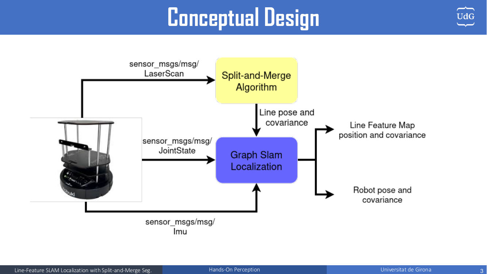
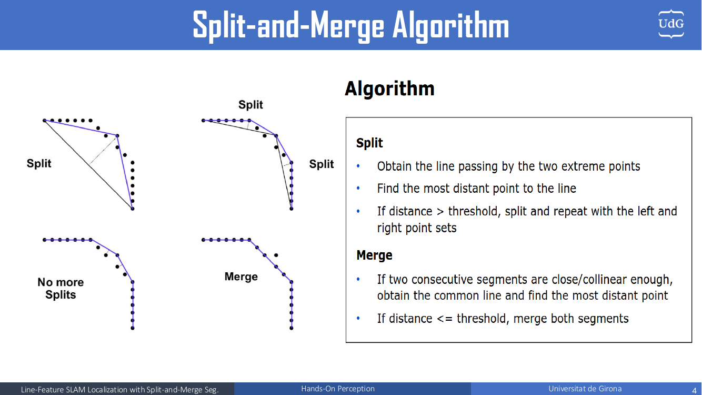
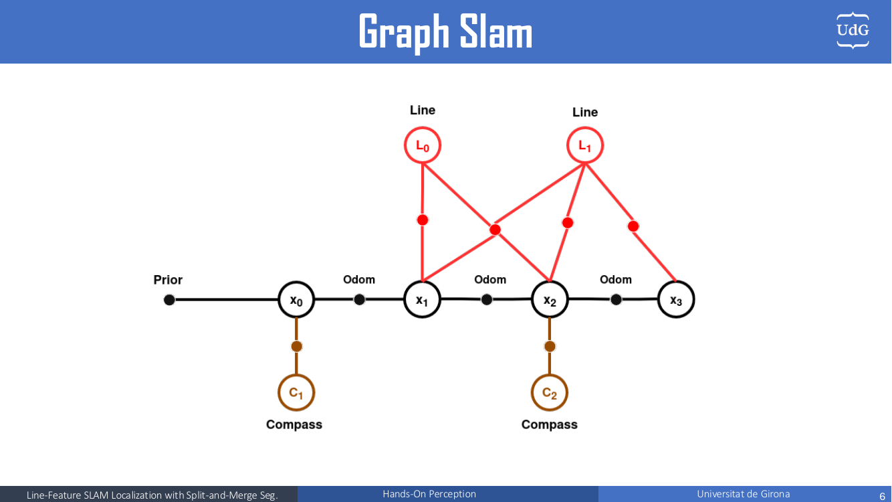
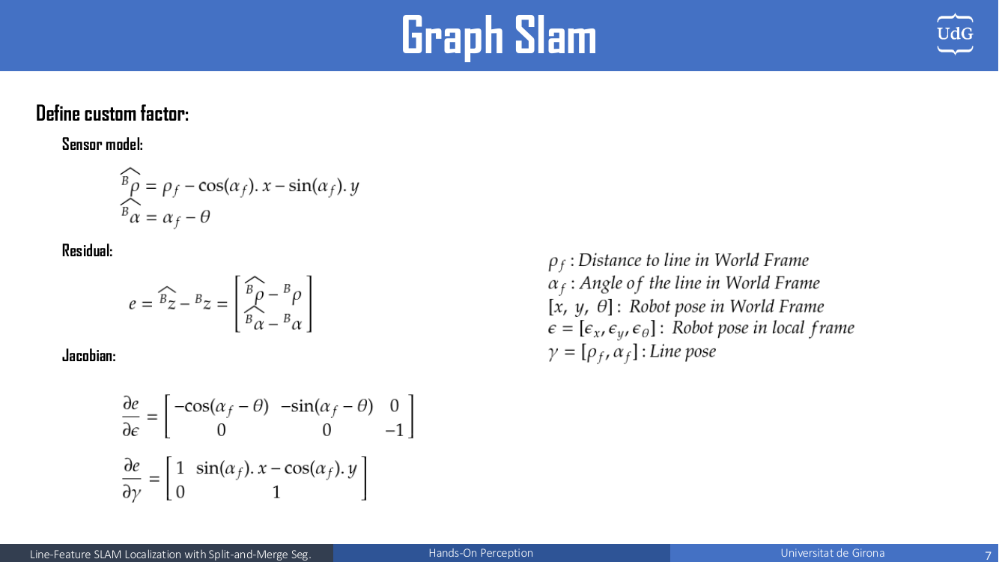
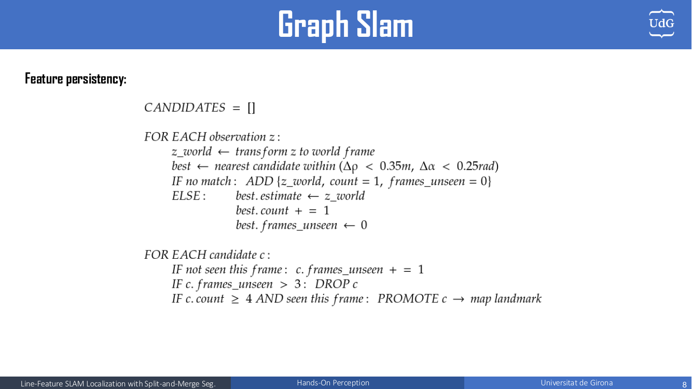
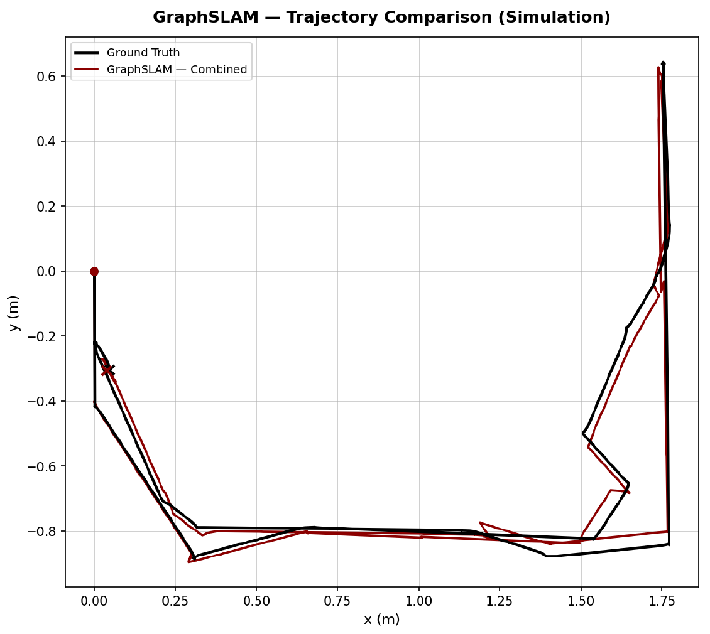
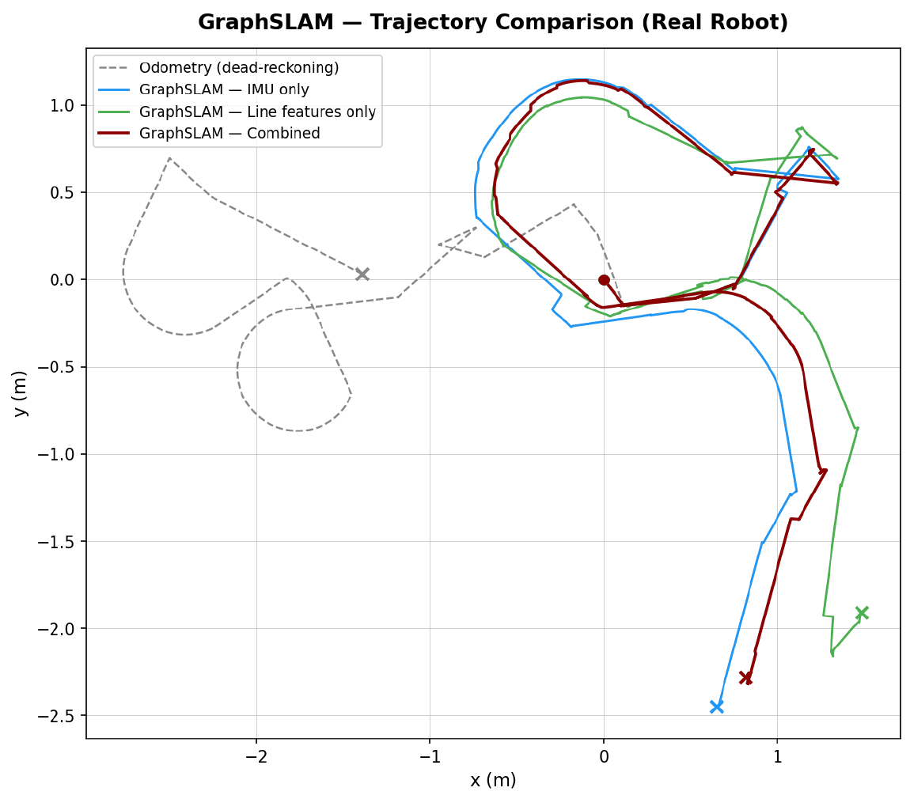

|
Hands-On Localization · Universitat de Girona
Line-Feature Graph SLAM🗺️ Split-and-Merge line extraction and GTSAM iSAM2 factor-graph SLAM on a TurtleBot This is my project within the Hands-On Localization course at Universitat de Girona, done together with Elchin Aslanli. The robot extracts line features (walls) from its 2D LiDAR scans and fuses them with wheel odometry and an IMU compass in a factor graph optimized incrementally with GTSAM iSAM2. It estimates the robot pose and builds a map of line landmarks, each with its uncertainty, in real time on both the Stonefish simulator and the real robot. System Overview Each time a joint-state message arrives, the node syncs the latest IMU and LiDAR data, predicts the pose with the differential-drive model, associates the observed lines with map landmarks, and, once the robot has moved enough, adds a key-frame to the graph and runs an iSAM2 update. Line Extraction: Split-and-Merge Each segment is converted to Hessian normal form $(\rho, \alpha)$. The endpoint noise is propagated to the line with the Jacobian $J = \partial(\rho, \alpha) / \partial(x_0, y_0, x_1, y_1)$, giving the line covariance $C_{line} = J\, C_{points}\, J^T$. Graph SLAM Back-End  The sensor model predicts how a world-frame line $(\rho_f, \alpha_f)$ appears from the robot pose $(x, y, \theta)$: $$ {}^B\hat\rho = \rho_f - \cos(\alpha_f)\,x - \sin(\alpha_f)\,y,\qquad {}^B\hat\alpha = \alpha_f - \theta $$The first optimization is a batch Levenberg–Marquardt solve used to initialize iSAM2; after that, new factors are pushed incrementally. The marginal covariances of the current pose and all landmarks are recovered after each update, for data association and for drawing the uncertainty bounds. Data Association and Feature Persistency Observations are matched to landmarks with ICNN and χ² gating on the Mahalanobis distance, plus a tight geometric gate to catch duplicates. Unassociated lines do not enter the map right away: they are promoted to landmarks only after being seen several times. This filters out spurious lines (people, clutter, bad segmentation) and noticeably reduces duplicate landmarks. Results  On the real robot, dead-reckoning odometry drifts badly, IMU-only fixes the heading but still drifts in position, and line-only gets jagged when few walls are visible. Combining both gives the best result. As future work, a sliding-window optimization would keep the graph small for long missions. My part of the work was the Split-and-Merge algorithm and the Graph SLAM implementation in simulation. Elchin worked on the RViz visualization and the real-robot Graph SLAM implementation. |